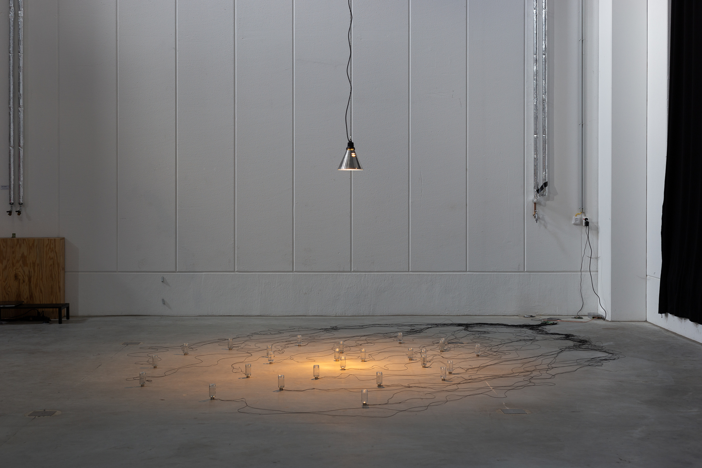

Remanence of a Grassland
2024
Electromagnetic coils, glass jars, permanent magnets, copper cabling, power supply, PCB, computer.
Dimensions variable
Remanence of a Grassland (2024) is a speculative sound installation consisting of electromagnetic coils, glass jars, permanent magnets, and control electronics. By pulsing the coils with alternating current, the magnets trapped within the jars may be chaotically manipulated. The rhythm of the system is the result of a real-time computer program which simulates an artificial group of insects. Over time, the insects within the simulation listen more carefully to their neighbors and adjust the pattern of their songs accordingly, resulting in moments of synchrony. This modification of behavior reflects that of calling insects in the wild.
Featured in 2024 at KIKK Festival, Namur, Belgium.
